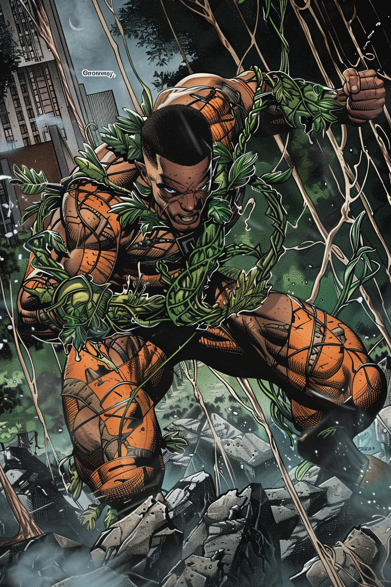

GREENWAY: NATURE'S ADVOCATE

Darius Greene grew up where concrete met soil. His home in Boston's Dorchester neighborhood faced a small community garden his mother had fought to establish amid urban development. While other children played video games, Darius spent hours with his hands in the earth, coaxing life from seemingly barren ground.
His mother, Dr. Elaine Greene, was a renowned ethnobotanist who studied traditional plant knowledge across cultures. His father, Marcus Greene, worked as a community organizer focused on environmental justice. Their influences shaped Darius into a passionate advocate for green spaces in urban environments.
His academic path seemed predictable – high school valedictorian, full scholarship to study environmental science at Boston University, research positions focused on urban agriculture. What his professors didn't know was that Darius had developed an uncommon connection with plant life.
It started subtly during his freshman year. Plants in his dorm room grew at accelerated rates. The community garden plots he maintained produced yields that defied explanation. He discovered he could sense plant distress at increasing distances, feeling their need for water or sunlight as physical sensations in his own body.
The catalyst for his full awakening came during a protest against the destruction of Mattapan's last significant green space for a luxury development. As bulldozers approached the centuries-old oak that anchored the ecosystem, Darius placed himself in their path. In that moment of crisis, dormant abilities fully emerged – vines erupted from the ground to entangle the machinery, roots reinforced themselves against disruption, and Darius found himself connected to every plant in the vicinity.
The incident was captured on dozens of cell phones. While authorities investigated, Darius went underground, supported by a network of environmental activists. During this period, he refined his abilities, learning to communicate with plants at a molecular level and direct their growth with increasing precision.
Samuel Revere, already organizing the Minutemen, tracked Darius through mutual connections in Boston's scientific community. Rather than approaching directly, Sam arranged a meeting through Darius's mother, who had suspected her son's enhanced abilities long before they manifested publicly.
Their conversation lasted through the night. By morning, Darius had agreed to join the team, seeing an opportunity to protect both Boston's people and its fragile urban ecosystems. His one condition: the team would incorporate environmental protection into its mission.
As Greenway, Darius brings scientific expertise and versatile plant-based abilities to the Minutemen. In combat, he can grow barriers of thick vegetation, create entangling vines to subdue opponents, or produce specialized plant compounds with medicinal or defensive properties. His connection with Boston's urban flora provides an extensive surveillance network – trees that "remember" conversations held beneath them, roots that detect underground movements, flowers that respond to chemical changes in the air.
His equipment enhances these natural abilities. Specialized seed pouches contain rapid-growing species from around the world. Modified plant hormones accelerate growth in emergency situations. His lightweight armor incorporates living plant material that strengthens in response to impact.
Darius maintains his academic career as cover, now working as a research fellow at Boston University's Urban Ecology Department. This position provides access to laboratories and scientific resources while allowing him to monitor environmental threats to the city. His research on pollution-resistant plants has earned recognition in academic circles, though colleagues wonder why promising experiments sometimes disappear from his lab.
Within the team, Darius often partners with Harbormaster on environmental missions, their water and plant abilities creating powerful synergies. He serves as the team's medic, his plant-based healing particularly effective for Liberty, whose kinetic absorption often leaves her with internal injuries.
"Plants have been healing the world for billions of years," he reminds his teammates during training. "We're just learning to ask them properly."